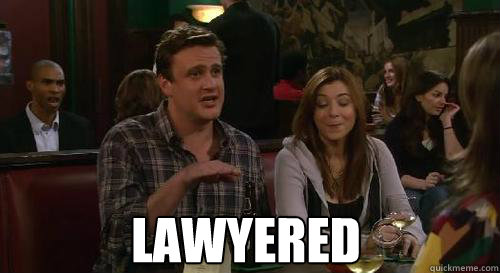

In the last few days, I’ve finished my final lecture at UNL, completed a pile of grading, submitted a subaward in a new collaboration (with people I met as a result of the elimination of my department). But, the thing that took more time than most of those things put together was advocating for students in the four departments which have been eliminated.
This was primarily done by emails; I will provide them here in a redacted form to protect both the identities of my student and the administrators, though I am sure Dr. Google will help you with the administrator identities.
Dean Wormer1,
A question came up in our department meeting - how does UNL intend to compensate faculty who have left the institution but are still advising/supervising students who are still at UNL?
I have a student whose dissertation is not something that the remaining faculty can supervise or serve as domain experts (the student is investigating [computer sciency things and perception and statistics]). Someone can handle the role of the major professor on paper (institutional responsibilities, signing forms, etc.), but no one remaining in the department has the domain expertise to serve as a content expert or advise the student on the actual writing, publishing, etc. that comes along with serving as the major professor.
I am sure UNL is not expecting faculty who were terminated to do unpaid labor for UNL after they leave, so what is the plan for compensating us for that labor?
Susan Vanderplas
Associate Professor
Statistics Department
University of Nebraska – Lincoln
Susan,
Thank you for raising this question. We take very seriously our responsibility to support students through degree completion, particularly in situations involving specialized academic work. We appreciate you flagging this as part of forward-looking continuity planning.
As a general matter, the University does not anticipate providing additional compensation to faculty who have separated from the institution for any continued advising or engagement with students, nor does it require such continued involvement. Any post-separation engagement would be voluntary and outside the scope of a formal University appointment. In many cases, when a faculty member transitions to a new institution, any ongoing scholarly engagement of this nature may be considered as part of that faculty member’s broader academic service and professional contributions, and may be addressed, as appropriate, in connection with their new institution’s expectations regarding research, teaching, and service.
With respect to institutional responsibilities at UNL, as you know, each student must have a designated major professor of record who is responsible for fulfilling University requirements, including oversight, approvals, and progression through the degree process. We recognize that, in certain instances, this individual may not have the same subject-matter expertise as the prior advisor. In those cases, the University may need to consider alternative structures to support the student’s academic progress, which could include committee-based advising models or other appropriate arrangements.
We are not aware of any general practice of providing stipends or other compensation to former faculty for continued advising following separation, with the exception of one highly unique and fact-specific situation involving multiple students and specialized circumstances. That instance should not be understood as establishing a broader precedent.
We appreciate your focus on ensuring continuity for students and are happy to continue working with departments to identify appropriate paths forward in individual cases.
Regards,
Dean Wormer
Wow, ok. So from this it is clear that the University doesn’t anticipate… basically anything. They haven’t considered that the faculty they fired while evading the protections of tenure might feel like this is not a standard transfer to a new institution. They haven’t thought about the fact that they eliminated a large proportion of the faculty in a specific discipline, and thus they may not be able to find new advisers for the students who remain longer than the faculty.
After a discussion at the Faculty Senate Executive Committee meeting, I was even more angry than I had been to start with. The idea that UNL would fire me (after getting tenure) and then expect my new employer to pay me to fix their problems. The idea that my expertise was clearly not at all appreciated, and UNL admin really didn’t seem to understand that they were losing something. The fact that there is so much labor that faculty do on a daily basis that is not seen, appreciated, or compensated by the institution – but that same labor is what makes the institution function and what makes getting an education worthwhile2.
Someone on the Senate Exec committee suggested that maybe the administrator didn’t know I wasn’t going to be at UNL next year and suggested I reply to the email adding that information, just in case. I set out to do just that when I got home from the meeting.
Sometimes, when I get really, really mad about something that’s intellectual, I go into what I think of as “lawyer mode”.

I did that when I first learned about how firearm and toolmark examiners testify in court and the things they get away with, like being considered an expert in experimental design because they took a biostatistics course in college3. And I ended up in lawyer mode again trying to provide the information that I was leaving in a way that might motivate this particular administrator to action.
It got a little bit out of hand, seeing as how the first paragraph was the email I set out to write…
Specific details included in the original email have been modified or redacted to protect the student’s identity and the identity of specific faculty members.
I’ve also made use of markdown formatting to allow you to collapse the distinct chunks of this email because it does get a bit overwhelming… The headers and such do not appear in the original because web-based Outlook email doesn’t have even the minimal features in pandoc/quarto markdown.
Dean Wormer,
I want to address a few of the points in your email, but first, you need to know that I will not be at UNL after July 31, 2026. I have accepted a position at Utah State and will be moving over the summer. I am convinced that this is a broader issue, but the situation with my student will need to be resolved before the end of the contract period.
While I am lucky to be able to make this move before the May 2027 termination date, I would not consider leaving UNL to be voluntary - indeed, I had no plans to move from UNL before the end of October 2025 (and even then, I was exploring contingency plans). I explored many different ways to stay at UNL and was still trying to make those work through the end of March, even as I interviewed at other universities. From my perspective, I have done as much as possible to avoid having this conversation.
You mention two options for this that do not require additional explicit budget commitments: committee-based advising, and advising as part of service to the discipline. I’ll address each of these in turn.
If ongoing advising is not service, and committee based advising models do not work well for most statistics dissertations, then the logical “other arrangement” is to follow EDAD and compensate terminated faculty after they leave UNL for the work they do to continue to advise their students. I’m not suggesting that UNL pay us a rate equivalent to what I charge for consulting (250-400/hour), but I do think it is important to acknowledge that this labor has value. I also think it’s a good idea for UNL to avoid the appearance of asking terminated faculty members to work for free after they have left UNL. Most importantly, though, I want to make sure that graduate students in terminated departments do not fall through the cracks, and the model you’ve proposed makes it clear that there has not been any administrative planning to prevent that outcome.
I’m sorry - I really did not set out to write a novel, but there are a host of problematic assumptions underlying the thought process presented in your email that raise real concerns11.
Susan
Footnotes
Things like building relationships with graduate students, mentoring them so they’ll be successful long-term, and setting them up with research projects that are interesting to them as well as productive for my long-term goals (ideally). Things like working with undergrads who are having trouble, sitting down with them to help talk through issues, or even just being there when they’re stressed and overwhelmed and offering a listening ear, a tissue box, and/or a hug.↩︎
Perhaps the closest situation is when a faculty member is denied tenure and leaves the institution, but even in that situation, there is usually a year to wind things down and transfer students, and a whole department of potential advisors to choose from.↩︎
NSF and NIJ both offer stipends for proposal evaluation on the order of $175-200 per proposal. I have no experience with other agencies, but NIJ is not usually on the bleeding edge when it comes to procedural changes.↩︎
When I went through P&T evaluation, I had to provide a mentoring plan to my department P&T chair, to ensure that I was providing my graduate students with an appropriate amount of attention - at least one hour of one-on-one meeting a week, plus the time outside of the meeting to review, correct, critique, and comment on research products — during a student’s last year, this writing/editing cycle can take several hours per week.↩︎
The adage of a camel being a horse designed by committee comes to mind.↩︎
This is the termination date provided for faculty in eliminated departments.↩︎
Of course, the 40-hour work week is also an underestimate, so it is possible that proportionately service remains at 5-10%. On weeks that I have been diligent about time-tracking, I spend close to 8 hours/week on service - faculty meeting, 3h exec meetings, 2h of editorial work, and 2h of assorted emails, conference organizing, and professional organization work. I am not counting the legal consulting work I do that could also be counted as service.↩︎
I directly inquired about how advising students at a previous institution would be evaluated at UNL when I started working here; it was absolutely not considered service↩︎
To put it a different way, I went in to mama-bear mode because it’s clear that no one here is looking out for the interests of my students.↩︎